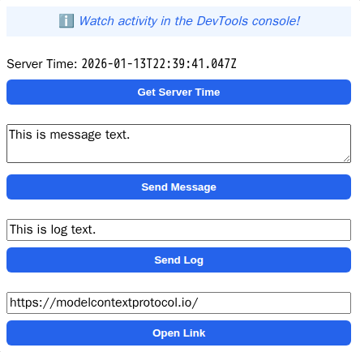

An MCP App example with a React UI.
Looking for a vanilla JavaScript example? See basic-server-vanillajs!
Add to your MCP client configuration (stdio transport):
{
"mcpServers": {
"basic-react": {
"command": "npx",
"args": [
"-y",
"--silent",
"--registry=https://registry.npmjs.org/",
"@modelcontextprotocol/server-basic-react",
"--stdio"
]
}
}
}
To test local modifications, use this configuration (replace ~/code/ext-apps with your clone path):
{
"mcpServers": {
"basic-react": {
"command": "bash",
"args": [
"-c",
"cd ~/code/ext-apps/examples/basic-server-react && npm run build >&2 && node dist/index.js --stdio"
]
}
}
}
useApp() hookcallServerTool, sendMessage, sendLog, openLinkserver.ts - MCP server with tool and resource registrationmcp-app.html / src/mcp-app.tsx - React UI using useApp() hooknpm install
npm run dev
get-time tool with metadata linking it to a UI HTML resource (ui://main/mcp-app.html).The project supports two primary build flavors:
npm run build:ui (Static UI Only): Bundles the entire React application into a single, self-contained HTML file (mcp-app.html) using Vite with vite-plugin-singlefile. This allows all UI content (JS, CSS) to be fully inlined. Because it is a standalone static file, you can host mcp-app.html anywhere (e.g., AWS S3, GitHub Pages, Netlify, or any CDN). Note: When hosted separately, it still requires connection to a backend MCP server to function as a complete tool.npm run build:full (Full Stack): Compiles both the static UI (build:ui) and the backend MCP server (server.ts, main.ts) into a Node.js-compatible distribution (dist/). This is the default build step for production deployments where you want to host both the UI and the MCP SSE endpoints together.Alternatively, MCP apps can load external resources by defining _meta.ui.csp.resourceDomains in the UI resource metadata.
For production deployments, we strongly recommend deploying this template (using build:full) to a traditional, long-running Node.js environment. Examples include:
This application IS compatible with stateless Serverless Functions (e.g., Vercel).
This MCP server has been successfully tested and is currently running in production on Vercel. While Serverless environments do implement strict execution timeouts and destroy memory state between function invocations, Vercel's Node.js runtime and standard API configurations handle the Server-Sent Events (SSE) connections used by MCP well enough for typical stateless tool executions and standard interactions to succeed.
While both Radix UI and Base UI provide excellent unstyled, accessible headless components, we chose Base UI for this project for several architectural reasons:
render props: Base UI favors the explicit render prop pattern over Radix's asChild merging strategy. This prevents common "Slot" component bugs and makes it much more explicit how props are injected into custom elements.Positioner component, clearly separating the core component logic from layout and positioning concerns. This provides greater control and predictability when placing popups and floating elements.@radix-ui/react-dialog), Base UI comes as a single, unified library (@base-ui/react). This simplifies package management and updates.Group wrapper for labels inside popups to ensure proper screen reader announcements).